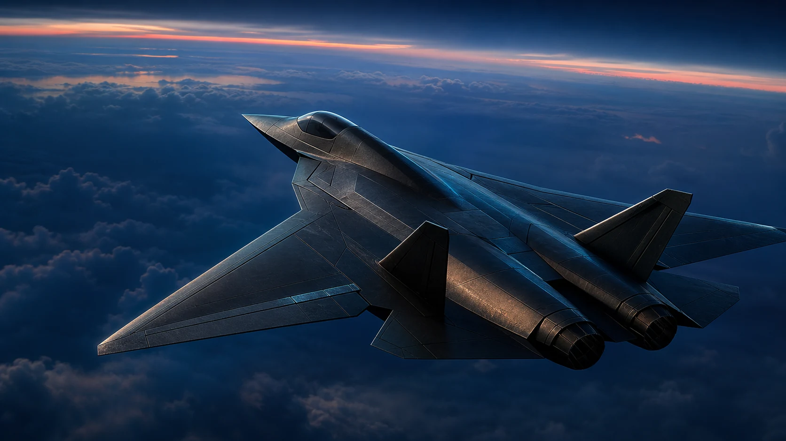
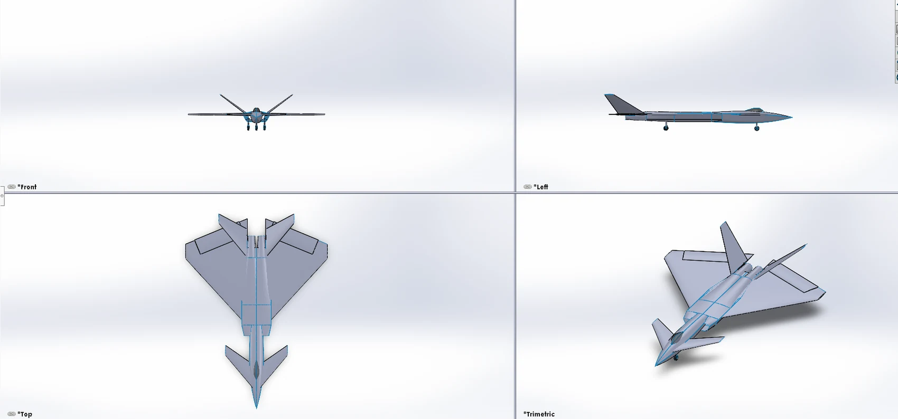
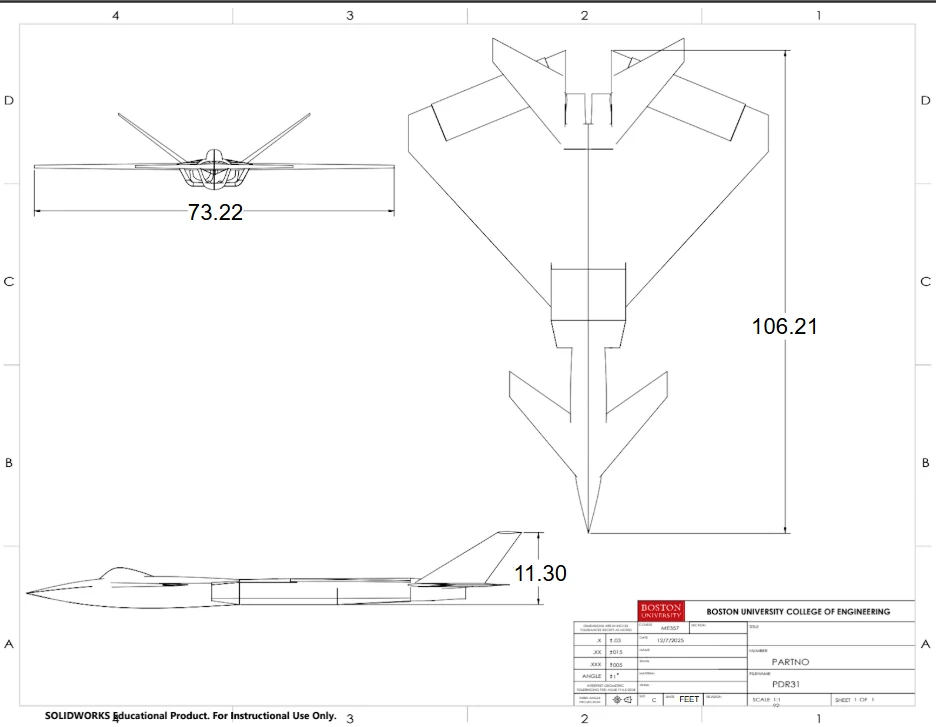
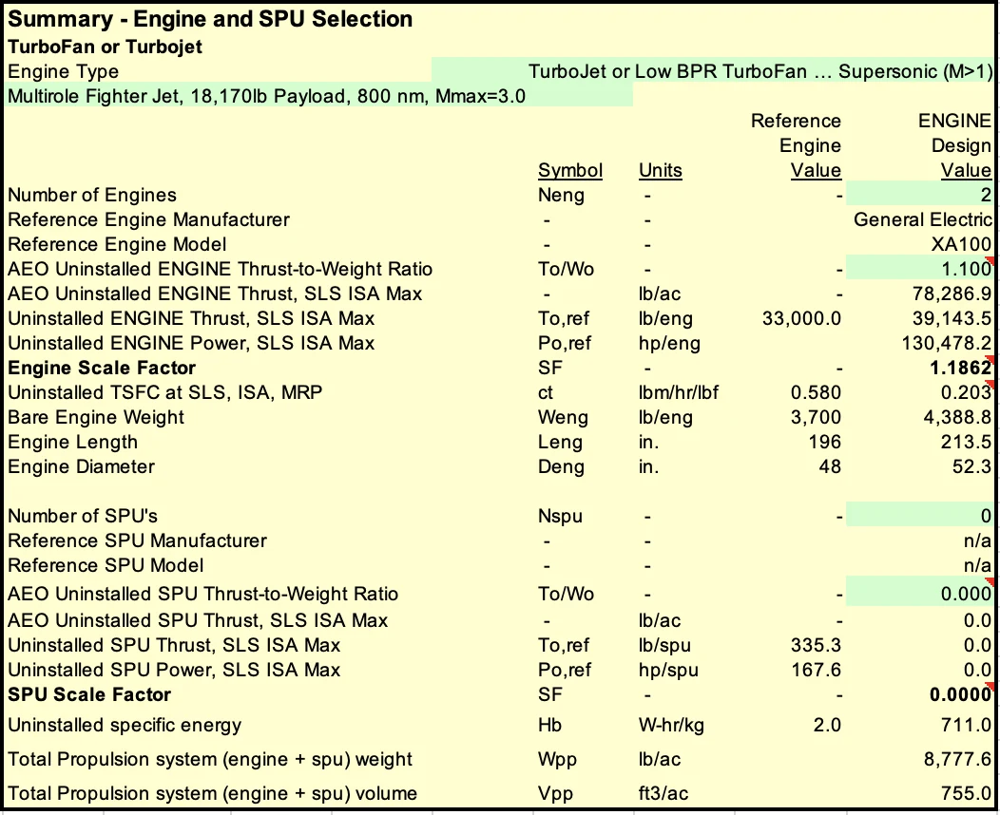
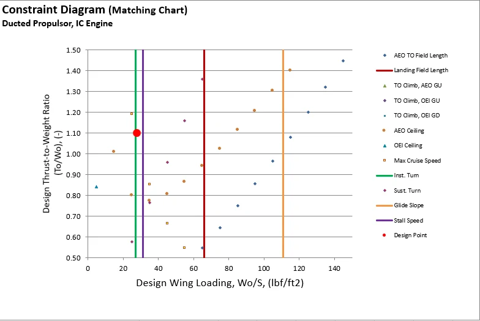
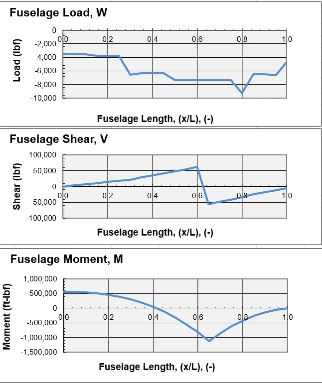
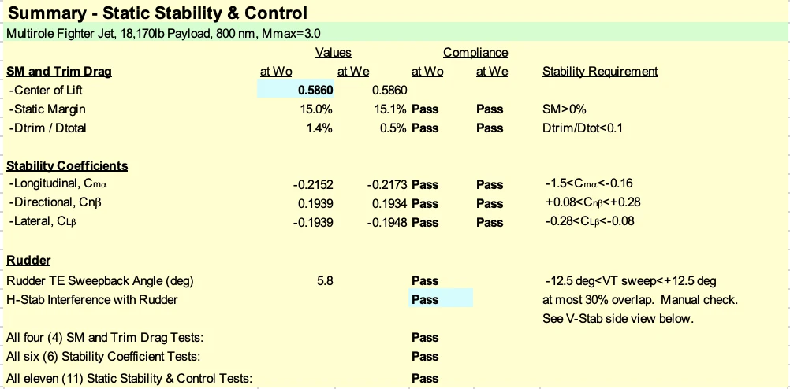

The Objective
The project framed a next-generation air-superiority aircraft concept intended for high-speed intercept and air-to-air engagements, balancing range, weapons payload, maneuver capability, and cost against reference fighter aircraft.
ME408 // AIRCRAFT PERFORMANCE & DESIGN // TEAM PROJECT
A conceptual sixth-generation fighter study focused on high-speed intercept and air-to-air missions, developed from design proposal through three preliminary design reviews.

PROJECT TYPE
Team design studyCOURSE
ME408DESIGN PHASES
Proposal + PDR1-3MISSION FOCUS
Intercept / air-to-airMaximum design speed
Mission range
Payload in workbook description
Sustained turn rate
Workbook takeoff-weight value
Reported initial unit-price ratio
01 // DESIGN BRIEF
The project framed a next-generation air-superiority aircraft concept intended for high-speed intercept and air-to-air engagements, balancing range, weapons payload, maneuver capability, and cost against reference fighter aircraft.
PDR3 describes a quality-design approach: pursue performance near objective levels while accepting advanced technology and cost assumptions for materials, aerodynamics, and propulsion efficiency.
02 // DESIGN PROGRESSION
Established the Mach 3.0, 800 nm, high-payload multirole fighter design direction.
Advanced wing, airfoil, fuselage, landing gear, armament, and empennage concepts.
Selected dual GE XA100-class engines and refined takeoff, landing, and lift systems.
Reported structures, stability and control, cost, performance metrics, and final CAD model.
03 // CONFIGURATION & CAD




04 // ENGINEERING ANALYSIS


05 // TRADEOFFS & LIMITATIONS
REPORTED DESIGN VALUE
PDR3 reports a maximum design Mach number of 3.0 and a sustained turn-rate value of 20 deg/s for the modeled configuration.
TECHNOLOGY ASSUMPTIONS
The review relies on advanced materials, aerodynamic, and propulsion technology factors, including graphite-epoxy structure and XA100-class engines.
SCOPE BOUNDARY
Values shown are drawn from the project workbook and presentations. The supplied files do not document manufacturing, flight testing, certification, or physical validation.
SOURCE MATERIAL
Case-study content was prepared from the supplied Design Proposal 408, PDR1 Fighter, PDR2, PDR3 Fighter, and the accompanying f67ozempic design workbook. CAD and analysis figures were extracted from PDR3; the hero visual is an enhanced presentation image based on the documented configuration.
Return to portfolio ->